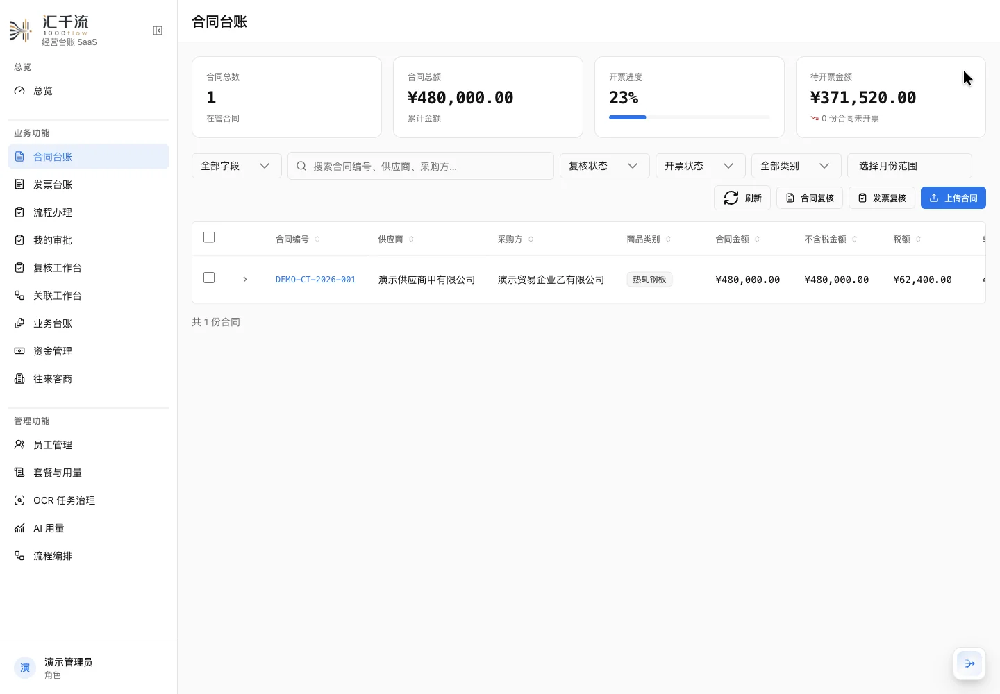
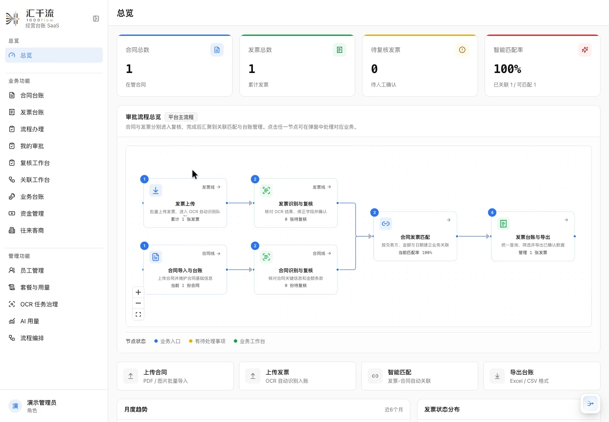
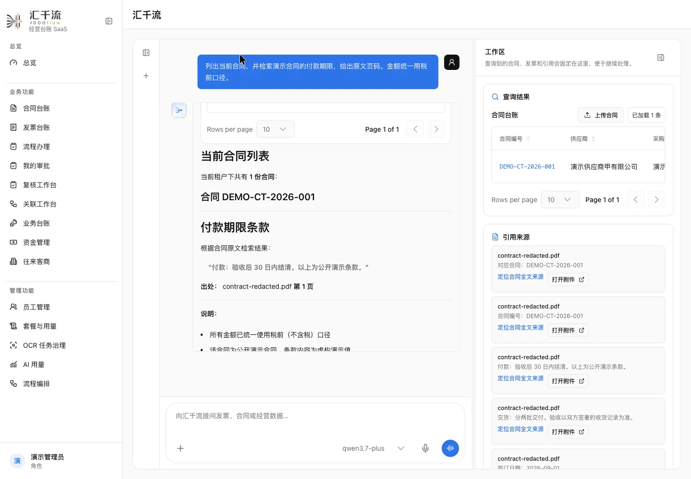
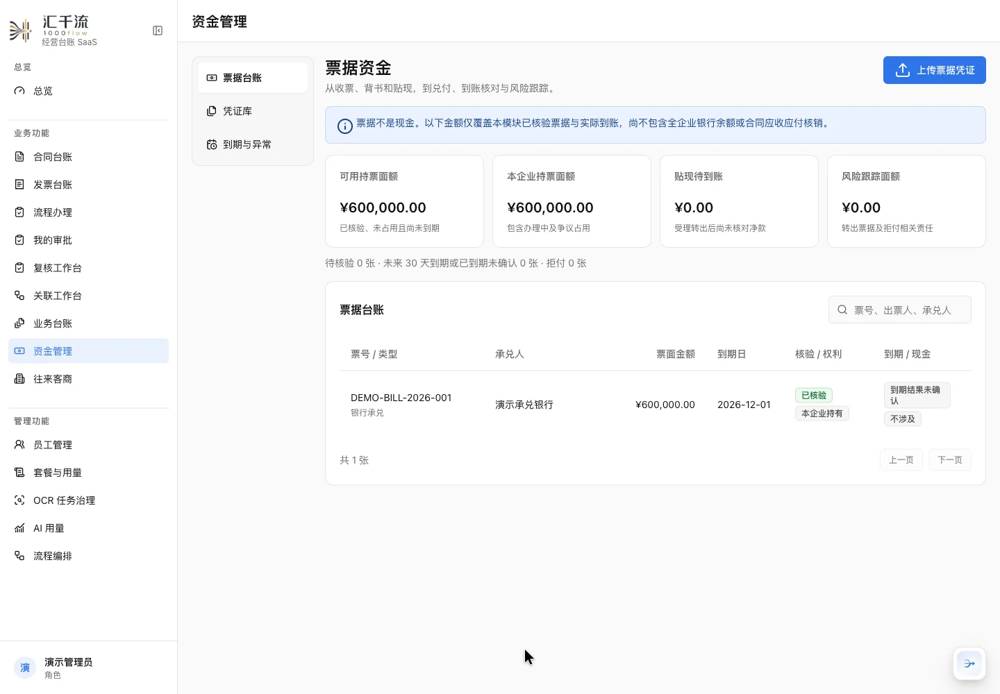
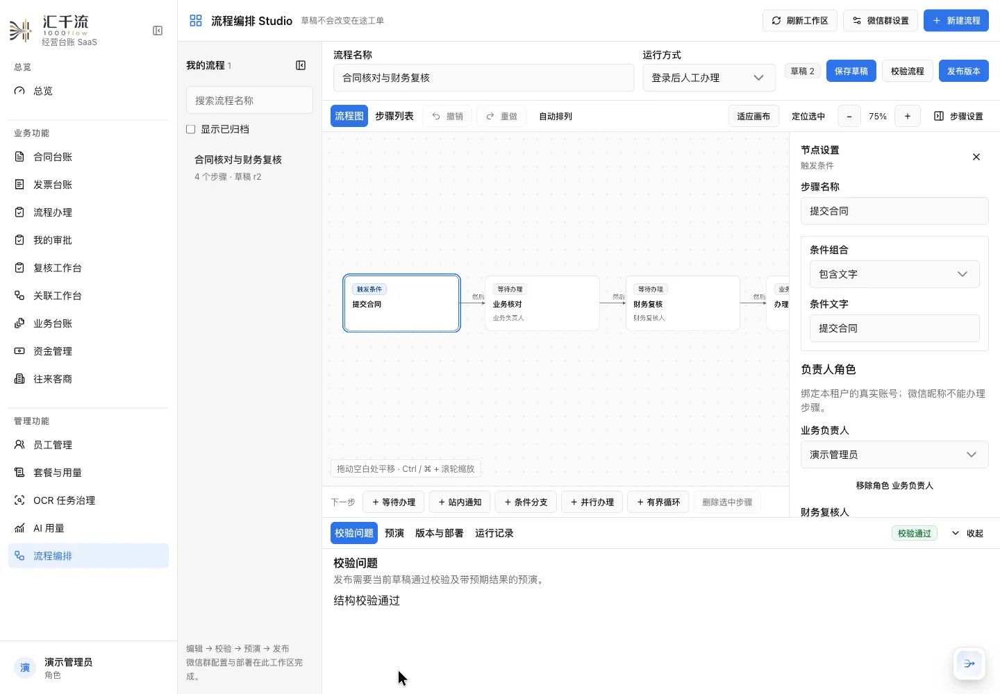

合同与发票，读懂再入账
批量上传、类型识别、OCR 字段提取与原件对照。人工复核后确认，让台账保留清楚的来历。

大宗贸易 AI 流程助手
合同、发票、票据与 AI，在同一个工作台。
从单据识别到事实核对，帮助业务与财务
看清依据、准备办理、追踪进度。
真实系统录制 · 不可逆脱敏样本 · 阿里云中文解说与字幕

CORE CAPABILITIES
已实现的能力覆盖材料处理、业务查询和流程协作。
关键财务动作继续由权限、确定性校验和人工确认控制。
批量上传、类型识别、OCR 字段提取与原件对照。人工复核后确认，让台账保留清楚的来历。

自然语言查询台账，检索合同原文。AI 给出结果与来源，复杂任务可以进入同一套业务工作台。

管理银承、商承及全页凭证。持票核验、背书、贴现、到期结果与实际到账分别登记，办理证据固定版本。

在 Studio 编排流程、校验并预演，再发布固定版本。负责人以真实成员绑定，办理进度与财务动作各自留痕。

支持多合同、行级建议及税前金额分摊；模型评分提供建议，剩余额度由服务端校验。
校正文字和通用表格，保留原件与历史修订。检索只引用当前有效内容。
听写转草稿、原生实时对话和后台任务委派，共用 Ask 权限与人工确认。
PRODUCT WALKTHROUGH
真实前后端与独立演示企业。文件结构来自本地 test_data，
身份、编号、金额等已不可逆移除或替换为虚构演示值。
演示先从企业总览进入合同和发票台账，上传经过不可逆脱敏的文件。系统提取字段后，用户在复核工作台核对原件并确认数据；全文工作台保留页码及修订。合同与发票建立税前金额分摊，Ask 再根据台账与原文回答问题。票据工作台区分票面金额、核验、办理状态和现金到账，Studio 通过固定版本组织协作。最后查看租户用户和配额。实时语音已实现，真人收音及弱网体验仍需专项验收。
BUILT FOR TRACEABLE WORK
用清晰的技术边界，让每一个入口共享同一套事实与权限。
模型不能自行指定租户或执行任意 SQL。查询按认证身份过滤，金额由领域服务计算。
全文检索结合向量、中文全文和重排。来源变更后使旧索引失效，引用保留页和版本。
AI 写工具创建待确认操作；执行时再次检查权限、动作归属、期限和数据版本。
OCR、索引与导出进入 PostgreSQL 持久队列，通过租约、重试、幂等和代次校验恢复。
CLEAR PRODUCT SCOPE
持续扩展业务范围，也保留明确的完成边界。
已实现合同与发票处理、全文修订、混合检索、确认式工具调用、票据子账、Studio、实时语音。
待专项验收真人麦克风与外放回声、弱网长会话、微信设备长期可靠性及多客户扩容。
后续建设完整物流库存、一般贸易应收应付、银行流水核销、费用利润及融资闭环。
企业账号由管理员供给。公开展示页不连接业务数据库。